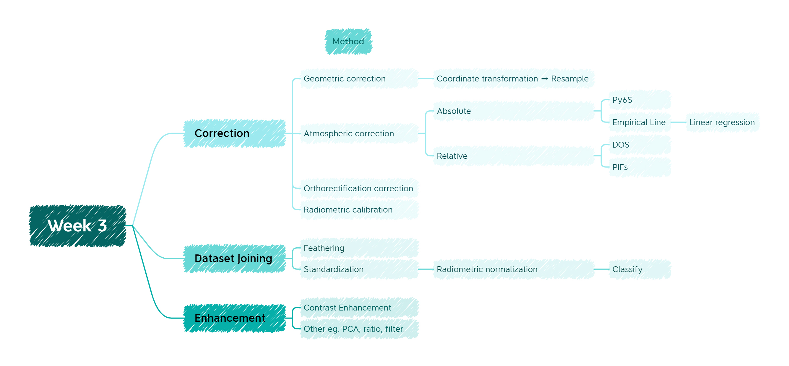
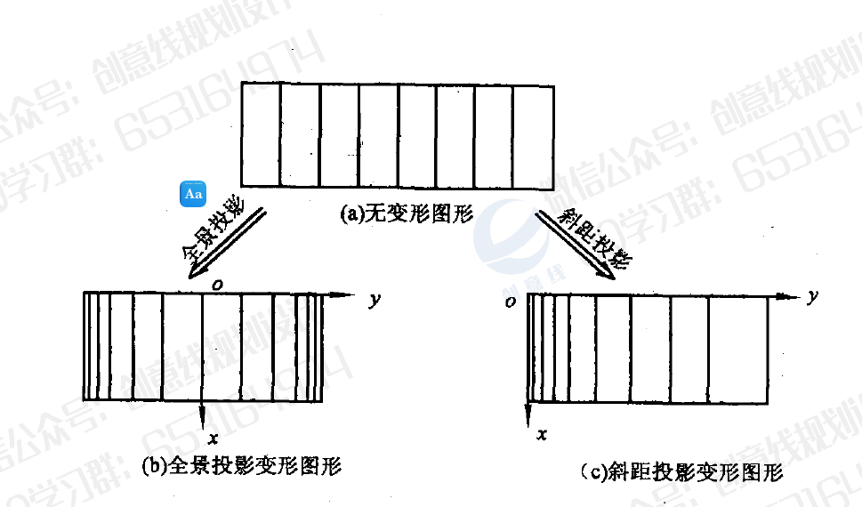
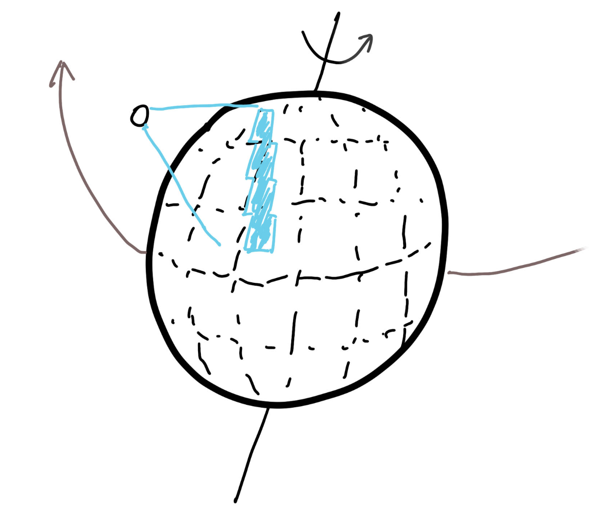

3 Week 3 Correction
3.1 Summary

This week we mainly talk about two main section, one is correction, another is about images enhancement. There are lots of reasons cause images become incorrect, which will bring lots of inconvenience in further analysis. All these factors will bring some obstacles for our following research. In that case, it is necessary to correct and enhance images. Although there are many methods which can improve the quality of images, different methods need to be chosen carefully for different scenarios and purposes.
3.1.1 Reason for causing distortion
3.1.1.1 Sensor device
There are many factors which will cause the error of images, such as sensor device itself,terrain, the rotation of the earth and the atmospheric environment. From perspective of sensor devices, different devices will cause different errors. For instance, panoramic cameras can cause squeezing on both sides of the image, as for side-looking radar, due to the way it scans, causes one side of the image to be squeezed and the other side to be stretched. See Figure 3.2 for an illustration(Zhan 2001).

3.1.1.2 Rotate of earth
Since the Earth rotates with not only linear but also angular velocity, when the sensor device acquires an image around the Earth at a certain linear velocity, there will be some deviation in the image.See Figure 3.3 for an illustration.

3.1.1.3 Topography and wind
Topography and wind are main factors which cause image distortion as well. Specifically, the image points will be displaced due to changes in the height of the earth’s surface. However, different types of sensor devices (e.g. panoramic projection sensors and side view radars) have different types of pixel displacement patterns. There are different formulas for calculating displacement for different types of sensor devices(Zhan 2001). For example, the terrain displacement formula for the side view projection case is
\[d{y}\approx-\lambda\times h\times cos\theta\]
As for wind, it will always influence planes.
3.1.2 Benefit and limitation of different methods
3.1.2.1 Correction
It is obvious that different methods have different benefits and limitations. To be specific, in the case of geometric correction, the first step is to transform the spatial position coordinates, which are divided into two methods: direct and indirect. Although the direct method does not change the size of the picture elements, they are not uniformly distributed in the output image. Therefore it is not the first choice. The indirect method, on the other hand, starts from the output image, calculates the position of each picture element in the original image in turn, and then calculates the pixel value at that position in the original image. However, its drawback is obvious as well: the positions of its calculated picture element points are not integers, so resample is the next step to solve the above problem(Chao 2018).
In the case of atmospheric correction, the main objective is to determine the true surface reflectance value by removing atmospheric effects from the satellite image. Atmospheric correction is arguably the most important part of satellite remote sensing data pre-processing(Themistocleous and Hadjimitsis 2008). However, it has the unavoidable disadvantage that it is almost impossible to perfectly correct every pixel point due to the difficulty of estimating aerosol and water vapour parameters(Liang, Li, and Wang 2012).
Orthorectification correction plays an extremely important role in the face of complex terrain, specifically in the correction of terrain displacements(Satellite Imaging Corporation, n.d.), in which a digital elevation model ( DEM) is used to make the correction. The DEM is specifically composed of a TIN (Triangulated irregular network) and has the advantage of being able to vary the density of sampling points according to the complexity and to determine the location of the undulating terrain. It overcomes the problem of redundant data in areas with little topographic variation (using fewer triangles to collect a small amount of information on flatter surfaces and more triangles on complex surfaces) and also allows DEM data to be obtained from topographic features such as ridges, valley lines, topographic transition lines and other important topographic features that can be digitised to the required accuracy (Huang, Yu, and Huang 2010).
And as for Radiometric calibration, the type of calibration is important for reliable quantitative measurements of images. However, when we use this method to calibrate images to reflectance, we do not usually see significant changes, but rather the main differences are in the spectral features associated with each pixel(Parks 2020).
3.1.2.2 Enhancement
In the case of data joining and enhancement, it is clear that the use of these methods to combine different images and enhance the visual appearance of the images will greatly assist us in our various studies. However, the exact method to be used will depend on the situation.
3.2 Application
As I mentioned earlier, it is important to select a suitable method to correct, join or enhance images based on different scenarios and request.
Specifically, geometric correction and orthorectification correction are often used where there is a distortion in the image size. Geometric correction usually requires accurate control points on the ground and a reference image, whereas for orthorectification correction control points and DEM data are required.
For atmospheric correction, the method is not required in all cases, and when and how atmospheric effects are corrected depends on the available remote sensing and atmospheric data, the information required and the analysis method used to extract it. For many other applications involving image classification and change detection, atmospheric correction is not necessary, essentially, as long as the training data is from the image being classified. In other cases, correction is necessary to put the multi-temporal data on the same radiometric scale for monitoring the land surface over time(Song et al. 2001). in his paper, Song also evaluates specific operational methods, and his results show that DOS3 proves to be the best correction method: its calculation of Tv and Tz assumes only Rayleigh scattering, i.e. no aerosols (2001).
For Radiometric calibration, when it is necessary to calculate the spectral reflectance or spectral radiance of a feature, or when it is necessary to compare images acquired at different times and by different sensors, it is necessary to convert the image brightness grey scale values to absolute radiance, the reason for this is that the radiance information of the feature acquired by the remote sensor is subject to interference from atmospheric radiation, in addition to There are a series of systematic errors, such as recording noise, detector errors, etc. These all contribute to the distortion of the spectral brightness.
For data joining and enhancement, this is often the case when the image does not cover a large enough area and is not visually appealing. The researcher’s needs are met by enhancing and joining images.
3.3 Reflection
The most helpful aspect of this week’s content is that we have learned about the principles of different types of calibration data, joining and enhancement. Although many of the platforms that provide remote sensing data nowadays already do calibration in advance, we still need to have a basic understanding of these concepts, and we need to understand the applicability of the different methods so that we can make our manual adjustments and corrections during our future analysis.